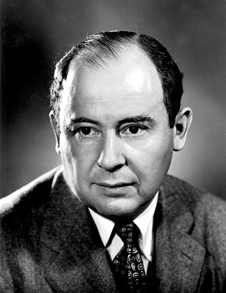

“Young man, in mathematics you don't understand things. You just get used to them.”
John von Neumann
Margittai Neumann János (külföldön: John von Neumann, született: Neumann János Lajos) (Budapest, 1903. december 28. - Washington, 1957. február 8.) magyar születésű matematikus. Kvantummechanikai elméleti kutatásai mellett a digitális számítógép elvi alapjainak lefektetésével vált ismertté.

Született: 1903. december 28.
Elhunyt: 1957. február 8. (53 évesen)
Ismeretes mint: matematikus, informatikus, fizikus, egyetemi oktató
Állampolgárság: magyar, amerikai
Iskolái:
Neumann hatalmas hozzájárult a matematikához, a kvantummechanikához, a kvantumelmélethez, a játékelmélethez, az ökonómiához és az informatikához. Számos olyan fogalom és elv fűződik a nevéhez, mint például a Neumann-elv a kvantummechanikában, a Neumann-stabilitáselmélet a játékelméletben, vagy a Neumann-eljárás a numerikus analízisben.
A számítástechnikának Neumann János az egyik legjelentősebb alakja. Ő volt az egyik első, aki felismerte a digitális számítógépek potenciálját. Neumann olyan alapvető koncepciókat és architektúrákat dolgozott ki, amelyek meghatározóak lettek a mai modern számítógépek tervezésében és működésében. Nevéhez fűződik a "Neumann-architektúra", amely egy olyan számítógép-architektúra, amelyben a program és az adat ugyanabban a memóriában található.
Neumann János rendkívül sokoldalú tudós volt, és kutatásai óriási hatást gyakoroltak az informatika, a matematika és a tudomány egyéb területeire. Munkássága és öröksége a mai napig hatással van a modern tudományos és technológiai fejlesztésekre.